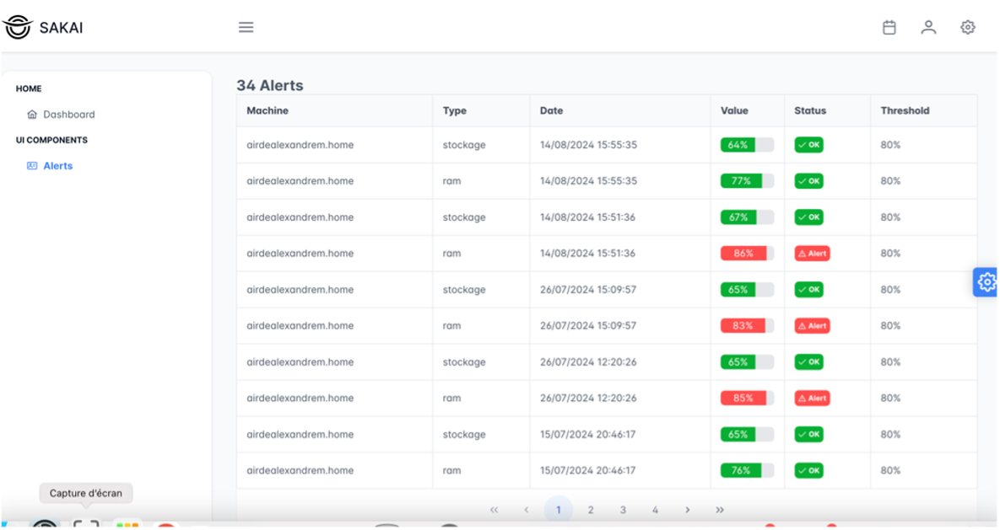
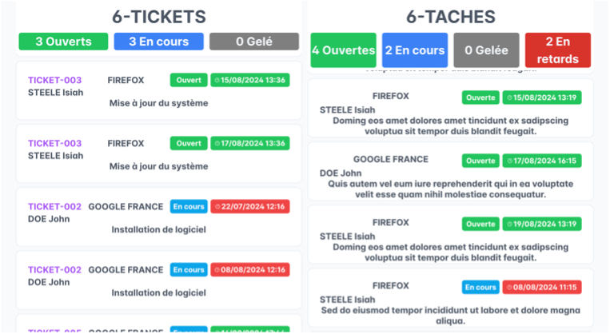

projets/diffusion-contenus-iesi/
Application de diffusion de contenus multimédias
Application de diffusion de contenus multimédias avec abonnement, développée en alternance chez IESI.
- cadre
- Alternance · IESI · 09/2025 → 06/2026
- état
- détails à venir
whoami
Software Engineer
Diplômé Concepteur Développeur d'Applications, j'ai une expérience concrète en entreprise : applications développées de bout en bout, refonte UX/UI, intégration d'IA et d'API. Je suis particulièrement à l'aise avec l'écosystème Node.js et je m'adapte à d'autres langages et technologies selon les besoins.
ls -lt experiences/
09/2025→ 06/2026
Développement d'une application de diffusion de contenus multimédias avec abonnement
IESIalternance · Mérignies
08/2025→ 09/2025
Refonte responsive & optimisation UX/UI
IESICDD · Mérignies
04/2025→ 06/2025
Développement d'une marketplace pour des unions commerciales
La Marmite Digitalestage · Ronchin
04/2024→ 06/2024
IESIstage · Mérignies
ls projets/ --featured
projets/diffusion-contenus-iesi/
Application de diffusion de contenus multimédias avec abonnement, développée en alternance chez IESI.
projets/marketplace-marmite/
Marketplace pour des unions commerciales, avec assistance par IA à la création des vitrines des commerçants.

projets/sonde/
Sonde qui relève la RAM et le stockage des postes, avec API REST et interface de visualisation.
projets/tickets-iesi/
Interface affichant en temps réel les tickets envoyés par les clients d'IESI, connectée à une API REST et déployée via Docker.

7 autres projets dans projets/ — écoles et entreprise
cat competences.yml
contact --all
— EOF —